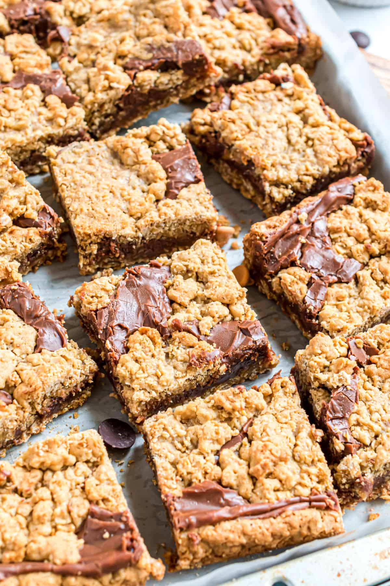

Chocolate Revel Bars

Description
Indulge in the perfect blend of rich, fudgy chocolate and
buttery oatmeal crumble with these irresistible chocolate
revel bars. Perfect for dessert or a sweet snack, they’re a
crowd-pleaser that’s as easy to make as they are to enjoy!
Ingredients
- 1 cup butter
- 2 cups packed brown sugar
- 2 large eggs
- 2 tsp vanilla
- 2 1/2 cups all-purpose flour
- 1 tsp baking soda
- 3 cups quick-cooking rolled oats
- 1 (14 oz) can (1 1/4 cups) sweetened condensed milk
- 1 (12 oz) pkg (2 cups) semisweet chocolate pieces
- 1 cup chopped walnuts (optional)
- 2 tsp vanilla
Steps
- Preheat oven to 350 degrees F.
- Set aside 2 tbsp of the butter. In a large mixing bowl,
beat the remaining butter with an electric mixer on medium
speed for 30 seconds. Add brown sugar; beat until well mixed.
- Beat in 2 eggs and 2 tsp vanilla until well combined.
- In another large bowl, stir together flour and baking
soda until well combined. Stir in oats.
- Gradually stir dry mixture into beaten mixture until well
combined. Set aside and begin working on the chocolate
filling.
- In a medium saucepan, combine the reserved butter, the
sweetened condensed milk, and the chocolate pieces. Cook over
low heat until chocolate melts, stirring occasionally.
- Remove the chocolate mix from the heat. Stir in chopped walnuts
(optional) and the remaining 2 tsp vanilla.
- Press two-thirds of the oat mixture into the bottom of an
ungreased 15x10x1 inch baking pan until flat. Spread the
melted chocolate mixture over the oat mixture until all of the
bottom layer is covered with chocolate.
- Using your fingers, dot the remaining oat mixture over the
chocolate.
- Bake for 25 minutes or until top is lightly browned.
The chocolate mixture will still look moist when you take
it out of the oven. Cool the pan on a wire rack. Cut into
2x1 inch bars.